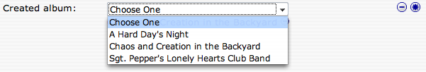
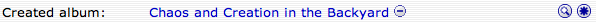
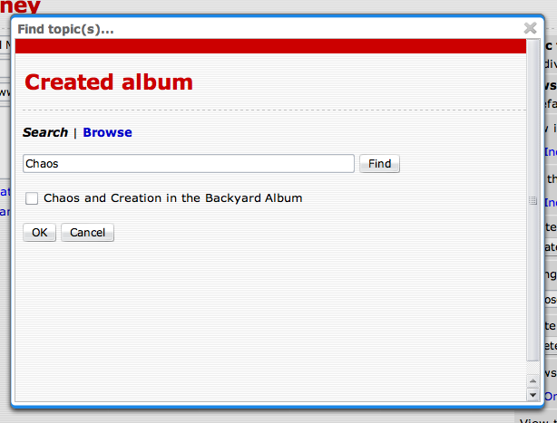
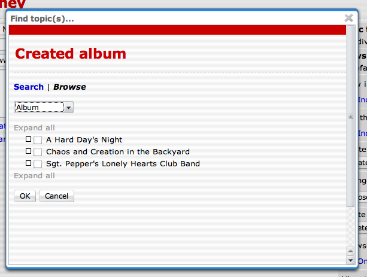
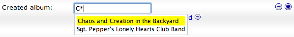
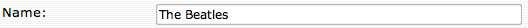
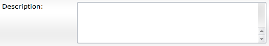
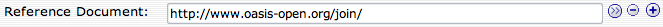
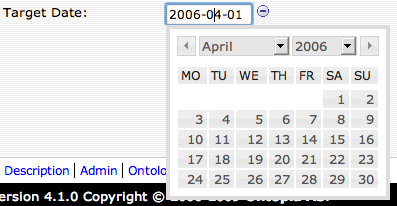
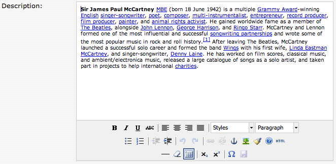

| Published by: | Ontopia |
|---|---|
| Date: | 2013-08-01 |
| Version: | 5.3.0 |
|
This is the user guide for Ontopia’s self-configuring, ontology-driven Topic Maps editor, Ontopoly. A topic map consists of both an ontology and an instance of that ontology; with Ontopoly, you can edit each of these. The ontology defines the rules for what can go into the instance, and these rules are used by Ontopoly to automatically generate the interface for creating and maintaining the instance. This document provides guidance for creating both ontologies and instances.
Reading this document assumes some basic knowledge about Topic Maps. If you are not familiar with Topic Maps, try reading one of the simple introductions, such as The TAO of Topic Maps, available from the Ontopia web site. If you are technically minded, you might also want to look at the XTM Specification or the new version of ISO 13250, especially the Data Model.
We welcome any suggestions you might have on ways of improving this User Guide. Please send them to dev@ontopia.net.
We hope you enjoy using Ontopoly!
Ontopoly is built as a client/server application. As a client, you use your web browser, while the server is a web server bundled with the distribution. The server-side application is built using the Navigator Framework and Web Editor Framework, which are parts of the Ontopia Knowledge Suite™. Ontopoly is accessible within Ontopia, an application that provides easy access to Ontopoly, Omnigator, and Vizigator.
Figure 1. Ontopia Home Page
To install and start up Ontopia, please see install.html. Once you have accessed Ontopia, choose Ontopoly from the available options.
Ontopoly’s primary purpose is to enable the manual creation and maintenance of topic maps that may be based on a variety of ontologies. In order to be able to provide the most intuitive possible user interface for such a generic application, Ontopoly is ontology-driven. What this means is that the forms-based interface for creating and maintaining a topic map is generated automatically from the underlying ontology and the rules that are defined for it.
For this reason, you need to create an ontology before you can edit a topic map instance in Ontopoly. Often the tasks of creating the ontology and editing the topic map instance (that is, populating the ontology) will be carried out by different people. Ontopoly is therefore divided into two main parts: the ontology editor and the instance editor. The application also has an administration interface, i.e., a page for adding metadata to the topic map (description, creator, version, etc.), validating it, etc.; and an interface for exporting to various interchange syntaxes.
The Topic Map Index Page allows you to open an existing topic map, create a new one, or import one from outside Ontopoly. Once you have selected one of these actions, you are taken to the application pages. The overall architecture and the navigation paths between the various parts of the application are shown in figure 2.
Figure 2. Overview of Ontopoly’s architecture
Ontopoly’s two primary functions provide a comprehensive Topic Maps editing environment.
Configuring a topic map: ontology and schema creation
Ontopoly’s Type Configuration Pages are used by the ontology designer to define the topic, name, association, association role, and occurrence types that will be available to creators of the instance topics. To take an example, when an author creates a topic of type composer, the Instance Editing Page will show the fields that apply to a composer, such as name, date of birth, and works; but when editing an opera, the fields will be different.
As the ontology designer assigns fields (such as associations and occurrences) to a topic type, the designer is also creating the schema. The creation of the ontology and the schema are seamless and appear to the designer as a cohesive operation. For further detail on ontology creation, see section 3.
Populating a topic map: instance creation
Once an ontology is created, it can be used to guide populating the topic map. The Instance Editing Pages are used by the person authoring the topic map instance. The available topic types are provided from the ontology. The schema constraints give the instance author further support by allowing only specific association types and occurrence types to be used with an instance of a given topic type. For further detail on instance editing, see section 4.
Ontopoly has a web-based interface. For a discussion of the various areas of the Ontopoly interface and a complete list of icons, tabs and buttons used in the interface, please see Appendix A.
Before you can create either the ontology or the instance, you have to open a topic map, so let’s start there.
When you first access Ontopoly from Ontopia, you are taken to the Topic Map Index Page, see figure 3. On the left, is a column for Ontopoly Topic Maps, in the middle is the list of Other Topic Maps (also referred to as “non-Ontopoly topic maps”), and on the right is the area for creating new topic maps. Another column, Missing Topic Maps, will also appear on this page if an Ontopoly topic map has been deleted from outside Ontopoly. For more information on deleting Ontopoly topic maps, please see section 3.8.1.
Figure 3. Ontopoly Topic Map Index Page
Ontopoly imports topic maps in the XTM 1.0 and 2.0, CTM, LTM, and TM/XML syntaxes; it will also import RDF. By default Ontopoly creates topic maps as XTM files in the Omnigator’s topicmaps/ directory. For information on exporting from Ontopoly, see section 3.9.
A topic map created in Ontopoly (an Ontopoly topic map) will differ from one created outside of it (a non-Ontopoly topic map). An Ontopoly topic map carries along with it topics that let it interact with the Ontopoly application and topics that define the schema (the system topics). You can always export a topic map from Ontopoly to remove the system topics, but they are needed for the topic map to be understood within the application. (It’s the system topics that make it possible for Ontopoly to automatically configure its instance editor for maximum ease of use.) Similarly, pre-existing non-Ontopoly topic maps will need these system topics to be added. Ontopoly automatically adds them when opening a non-Ontopoly topic map.
In the situation where you are trying to load an Ontopoly topic map using an older versjon of the ontology, you will be forward to an upgrade page. If you want to perform the upgrade click the OK button. Otherwise click Cancel. Once the upgrade is done you will be forwarded to the Type Type Index Page.
Figure 4. Conversion page
If you try to open a non-Ontopoly topic map, you will be forwarded to the conversion page, which looks something like this:
Figure 5. Conversion page
Opening a non-Ontopoly topic map converts it to an Ontopoly topic map and creates an index in the process (which may take several minutes). When you click on a non-Ontopoly topic map, you will get information about the conversion process. If the topic map contains features not supported by Ontopoly (see appendix B), you will see a warning and a list of the unsupported features that are used in the topic map. There are options to update your existing topic map or create a copy of it. After this decision, you are taken to the Topic Type Configuration Page.
During the conversion, Ontopoly makes decisions about the ontology, based on what it finds in the topic map, and generates the strictest possible schema. Sometimes it will be stricter than necessary. For example, if occurrences of a particular type (say, email) never occur more than once for any person topic, then Ontopoly may create a rule allowing a maximum of one email occurrence per person topic. You may want to relax the rule, however, using Ontopoly’s ontology editor, in order to allow for the possibility of multiple email occurrences in the future. For this reason you should always examine the ontology generated by Ontopoly when importing an external topic map, and adjust it to reflect the true intent behind the topic map.
Use the Name field in the right hand column of the page to create a new topic map. After naming the topic map, you are taken to the Topic Type Configuration Page. The name you enter will be used for the name of the topic map and will appear in the left-hand column on the Topic Map Index Page when subsequently accessed. (You will be able to change it later, if you like, see section 3.8.) The name will also be used to generate a file name, with the extension .xtm being added automatically.
A simple topic map example will be used throughout the next two sections to illustrate Ontopoly’s functionality. It is a topic map that captures information about artists, the albums they have made, and tracks on the album. We've called it Jill’s Music and it’s based on an ontology called MyMusic; both are included in the Ontopoly distribution.
So, why wait? Go on now to section section 3 and start creating your first topic map in Ontopoly!
Each topic map you create will be about some domain of knowledge, such as your corporate intranet, medical research, recording artists, the works of Shakespeare, etc. A topic map identifies subjects and the relationships between those subjects. Each of the subjects will be of a certain type, e.g., Puccini and Verdi are composers, La Scala and Fenice are opera houses, Milan and Venice are cities, etc.
Using Ontopoly’s Type Configuration Pages, you will create the typing topics that will control your topic map: topic, association, occurrence, role and name types. You will also create the rules for how the typing topics are used together.
To provide a practical introduction to Ontopoly’s functionality, we’ve created an ontology for a music organization topic map, MyMusic, and an example topic map that uses that ontology, Jill’s Music.
Here are the topic types we will be working with:
Album Artist Group Individual Artist Track
The indentation indicates that Group and Individual Artist are subtypes (or subclasses) of Artist.
In addition, we have defined the following association types:
Album created by Belongs to album Is a Member of
When you open an existing or newly created topic map, you are taken to the Topic Type Index Page, see figure 6. Here you’ll see menu buttons for each kind of typing topic: topic types, occurrence types, association types, role types, and name types. The Ontology tab is available on every page in Ontopoly. Clicking on it will always bring you to the Topic Type Index Page. From there you can quickly access the corresponding Type Index Pages for other kinds of typing topics, which are typically used less often.
All of the Type Index Pages are more-or-less the same. Each one presents a tree of existing types and a field for creating a new type. The types are displayed as a type hierarchy and includes buttons for expanding and collapsing the tree structure.
Clicking on any of the typing topics (or creating a new one) takes you to the appropriate Configuration Page, as described below.
Figure 6. Topic Type Index Page
Creating an ontology is an iterative process. Through Ontopoly’s interface, you can navigate easily between the Type Index Pages and the Type Configuration Pages. In the following we describe each kind of Type Configuration Page in turn, but in your work you will find yourself moving back and forth throughout the process.
There are five kinds of types in Topic Maps: topic types, occurrence types, association types, role types, and name types. Each of these has its own kind of Type Configuration Page, which is accessed via the links at the top on the Type Index Pages. Each Type Configuration Page is unique, but some fields are common to all of them (see figure 7):
Name: Editable name of the typing topic.
Subject identifier: The (Published) Subject Identifier of the typing topic. Its value must be a URI. The icon following this field indicates that you can create more than one. A subject identifier is not required, but is good practice. For more information on using PSIs, please see the OASIS Recommendations.
Description: Field for defining and documenting the topic type. We recommend that you use this field extensively to capture your intentions regarding the role of this type in your ontology.
The following two fields appear on the Advanced view panel for all types:
Read-only: You may create typing topics that can only be read. The instance author will be able to choose such a topic type and read what is in it, but no instances may be created.
Hidden: In some cases topic types should only be seen by the ontology designer, and that’s the perfect use of this choice as the topic will not be available in the instance editor.
The following sections provide more detail on each kind of Type Configuration Page.
The Topic Type Index is shown in figure 6. From here you can enter a name for a new topic type in the field and then click Create, or you can choose an existing topic type to view or edit. Our example already contains an ontology which has been partially populated, so we will go straight to the Topic Type Configuration Page for a pre-existing type, Artist.
Configuration pages control what the instance authors will see as they create topics of a given type. Let’s look at the Topic Type Configuration Page in figure 7.
The main portion of the page is divided into three parts: the top part lists the core properties of the typing topic (its name, subject identifier and description fields plus abstract, superclass and subclass fields which are specific to topic types); the lower part of the page lists those properties, or “fields” (i.e., names, identifiers, occurrences, and associations), that will apply to instances of the type; the right part contains operations, that can be performed on the topic type, and links to other relevant pages.
The properties that are common to all typing topics and thus occur on all Configuration Pages were described above in section 3.2. This applies to Name, Subject identifier, Description, Read-only, and Hidden. The first three fields are shown in the Default view panel and the last two on the Advanced view panel. The following additional properties are specific to topic types:
Figure 7. Topic Type Configuration Page - default properties
Abstract: Check this box if you want to use this typing topic as a model for other topics, but don't want a user to create any instances of it directly. Typically, an abstract topic will be a supertype in a hierarchy of topics. In our example, we have a two-tier hierarchy where Artist is the supertype and Individual Artist and Group are subtypes. We will not want authors to create instances of Artist, only of its subtypes. However, having the Artist supertype is useful because, once we define it, its subtypes will inherit all of its fields. If one subtype requires fields not needed by the other subtypes, those fields can be added at subtype level.
Superclass: A drop down list of topics from which to choose a supertype (i.e., a parent in the type hierarchy) for the current topic. (In our example there is no supertype, because Artist is at the top of the hierarchy and thus has no parent.)
Subclass: A list of topics of which this topic is the supertype (i.e., parent in the type hierarchy). In our example, although Artist has no supertype, it does have two subtypes, each of which is highlighted as a link that can take you to the corresponding Type Configuration Page. After the last subtype, there is a icon that can be used to create another topic type which will automatically become a subtype of the current topic type.
Note that the type hierarchy can be constructed from two directions: upwards (by assigning the supertype of each topic type), or downwards (by specifying its subtypes). You can also use a combination of the two approaches. This hierarchy can be made visible on the Topic Type Index Page by clicking on Expand all nodes (see figure 6).
Figure 8. Topic Type Configuration Page - advanced properties
Large instance set: Some topic types have such a large set of instances that you do not want the user to be able to display the entire list, because this would take too long to render, and the pages would be too big. Checking this box makes Ontopoly turn off the listing feature, and would require the user to search for instance topics instead.
Hierarchical associations: Here you can select a number of association types that together form a hierarchy of the instances of this topic type. The only association types which can be selected here are those which on the Association Type Configuration Page (see section 3.5.1) are defined as being hierarchical. The effect of this setting is to get topics of this type presented in a tree view on the Instance Index Page (see section 4.1.1) and in the Topic Selection Dialog (see section 4.1.4).
Hierarchy definition query: Sometimes you will want to define your own hierarchy for the instances of a topic type without using the default hierarchy pattern. For those situations you can specify a tolog query that retrieves the preferred hierarchy. The query should return two columns, which contains all the parent/child combinations in the hierarchy/tree. The first column must contain the parents and the second column must contain the children. Topics with no parents and no children must return null in the parent column and itself in the child column. The query should also sort first by the parent column and then by the child column. The query can take one parameter, %topicType%, which is the topic type itself. There are no restrictions on the column names. [Remark: This is not yet supported.]
Figure 9. Topic Type Configuration Page - default properties
In the lower part of the Topic Type Configuration Page (in the default view) you can define and add fields to the topic for use in the Instance Editing Pages. The fields shown here are the fields that are already assigned to the topic type. The Names, Occurrences, Associations, and Identities links at the top will allow you to assign new fields and the icon will let you create a new field by creating a new ontology type. New fields will be placed at the bottom of the fields list.
Names: Clicking this label will display a list of available name types on the right side. From this list you can assign a new field for the given name type by clicking the icon. Only name types not already assigned to this topic type will be shown in the list. By default, there is just one name type: Name, which is for general-purpose, “untyped” names. In our sample topic map the Name name is already assigned, but we get another name Nickname that we can assign from the list.
You can create new name types by clicking the icon. This will also assign a new name field and then take you to the Name Type Configuration Page, see section 3.7.
Figure 10.
Occurrences: Clicking this label will display a list of available occurrence types on the right side. From this list you can assign a new field for the given occurrence type by clicking the icon. Only occurrence types not already assigned to this topic type will be shown in the list. By default, there are three predefined occurrence types: Creator, Description, and Version. In our sample topic map only Creator and Version shows up in the list as Description has already been assigned.
You can create new occurrence types by clicking the icon. This will also assign a new occurrence field and then take you to the Occurrence Type Configuration Page, see section 3.4.
Figure 11.
Associations: Clicking this label will display a list of available association types on the right side. The list will also show information about what kind of topic can be found at the other end of the associations. From this list you can assign a new field for the given association type by clicking the icon. Only association types not already assigned to this topic type will be shown in the list. By default there are no predefined association types. In our sample topic map Belongs to album, Created album, Has/had as Members and Is/was a Member of shows up in the list. Contains track and Album created by has already been assigned.
You can create new association types by clicking the icon. This will also assign a new role field and an association field and then take you to the Association Type Configuration Page, see section 3.5.
In the case where a topic might play both roles, such as parent and child in a parent-child association, each role (field) should be selected in turn so that both are available fields on the Instance Editing Page.
Figure 12.
Identities: Clicking this label will display a list of available identity types on the right side. From this list you can assign a new field for the given identity type by clicking the icon. Only identity types not already assigned to this topic type will be shown in the list. By default, there are three predefined identity types: Subject identifier, Subject locator, and Item identifier. In our sample topic map only Subject locator and Item identifier shows up in the list as Subject identifier has already been assigned.
You cannot create new identity types at this time.
If topics of this type represent information resources (which would probably be the case for the topic type Document, for example), the type can be assigned a Subject locator field, otherwise the type can (and, in many cases, should) be assigned a Subject identifier field. For more information on the use of subject identifiers and subject locators, see the OASIS Recommendations.
Figure 13.
Now let’s move on down to the existing fields. As you can see from the figure below the Artist topic type has five fields assigned. Each field is displayed in a separate table row.
Figure 14.
At the left you find the icon. Use this icon to reorder the fields. Drag the icon on top of the field that you want the dragged field to be ordered after. Note that in order to make a field become the first field you have to first drag it on top of the first field and then afterwards drag the first field on top of the new second field.
The icon will let you edit the topic that represents the field. Clicking this icon will navigate to the instance page of the field. This page will reveal more detailed information about the field.
Next is the field label. The label is a link that lets you navigate to the name type, occurrence type, association type or identity type topics declared by the field.
To the right of the field label is the value type of the field. This will tell you what kind of values can be assigned to this field. In our example the Name is a name string, the Subject identifier is a URI, and the Description is a string. The association fields shows the kind of topics that can be associated through the field. The Contains track can contain Tracks and the Album created by can contain Artists. If the value type is Many then multiple topic types can be associated through that field. Hold the mouse over the Many label to see which topic types that is.
The drop-down list shows the cardinality choices for the number of times the field can or must be used in the Instance Editing Page. There are four possible choices: Exactly one, One or more, Zero or more, and Zero or one.
Each line ends with the icon, which is used to remove fields, i.e. unassign them. Removing a field will make it once more available as a option to reassign. If the icon is shown instead of the remove icon then it means that the field has been assigned to a supertype. Clicking the icon will navigate to the supertype that declares the field. The field can then be removed there instead.
We now know how to add fields to a topic type. However, most of these fields have to be defined by the ontology designer through the use of the other Configuration Pages, so let’s move on.
Occurrences can refer to resources external to the topic map, such as a web page, or they can be internal to the topic map, in which case they can be thought of as attributes (or properties) of the subject that the topic represents. You can create new occurrence types or choose one for edit from the Occurrence Type Index, see figure 15, which will take you to the Occurrence Type Configuration Page, see figure 16.
Figure 15. Occurrence Type Index Page
The Occurrence Type Configuration Page for Description looks as follows:
Figure 16. Occurrence Type Configuration Page - default properties
The core properties of the occurrence type topic are shown in the upper part of the page; the lower part contains the information about how fields of this type will be used when editing instances. The properties of the occurrence field is displayed in the grey Occurrence field field box. This box represents the field that is assigned to topic types. The actual topic types that is assigned the field (and indirectly the occurrence type) can be seen in the Used by field.
Core properties common to all typing topics are described in section 3.2.
Name: This is the name of the field. The value will be used to display the label of the field in the user interface. If no value is given the name of the occurrence type will be used.
Data type: This field describes the value type of the occurrence field. The value type can be any of the following:
String: a string value (the default).
URI: a web address.
Date: a date value, matching the YYYY-MM-DD pattern. Values can be selected using a calendar widget.
Datetime: a datetime value, matching the YYYY-MM-DD hh:mm:ss pattern. Instance authors are given a calendar widget.
Number: a numeric value, either an integer (like 42) or a decimal (like -4.2), with an optional negative sign in front.
HTML: an HTML document or an HTML fragment. HTML content will be edited using a rich text editor.
Image: an image. Images can be uploaded via a file upload widget.
Used by: If the occurrence field has been assigned by any topic types, they are listed here, highlighted as links to their Configuration Pages.
Cardinality: The field specifies the cardinality of the field. The cardinality specifies the number of times the field can or must be used in the Instance Editing Page. There are four possible choices: Exactly one, One or more, Zero or more, and Zero or one. The default is Zero or more.
As the occurrence fields are ones in which the author will be providing content rather than picking topic names or role labels, it is necessary for the ontology designer to describe the dimensions that the field will be given on the Instance Editing Page. Two fields are provided for this purpose:
Width: in characters (the default is 50)
Depth: in rows (the default is 1)
Figure 17. Occurrence Type Configuration Page - default properties
The occurrence type's Advanced view panel contains only the two standard Read-only and Hidden fields.
Associations describe a relationship that can or must exist between topics. You can create new association types or choose one for edit from the Association Type Index, see figure 18, which will take you to the Association Type Configuration Page, see figure 20
Figure 18. Association Type Index Page
Most associations are binary, that is, there are two role players, such as in parent-child or employer-employee relationships. You can also create associations with only one role player, or with three or more role players. We will focus on binary associations for the scope of this document.
Binary associations are bi-directional. For example, an association named composed-by might sound like it is only uni-directional, i.e., Tosca is composed by Puccini. However, it also represents the relationship expressed as, for example, Puccini composed Tosca. Topic Maps accomplishes this bi-directionality, unambiguously, by assigning roles to the players. The relationship expressed in figure 19 can be described as, “In the composed-by relationship, the role of composer is played by Puccini and the role of work is played by Tosca.”
Figure 19. Associations are bi-directional
Ontopoly’s Association Type Configuration Page helps you to define the association type, roles their role types and their corresponding role player types, and the labels for role fields as seen from the perspective of each role player.
The Association Type Configuration Page for Album created by looks as follows:
Figure 20. Association Type Configuration Page - default properties
The core properties of the association type are again shown in the upper part of the page; the lower part contains information relating to the role fields declared for the associaion type.
Core properties common to all typing topics are described in section 3.2.
The Association Type Configuration Page contains one new checkbox in the top portion of the form, Symmetric, and an association field labelled Association field.
Symmetric: A symmetric relation is one which is the same from both (or all) directions. The teacher/pupil relation is not symmetric, because the two participants are doing different things, whereas the is-neighbour relation is symmetric, since there’s no difference between the two neighbours. In one sense, you can say the participants in a symmetric relationship are equal, which does not hold for created-by, killed-by, eaten-by, but does hold for works-with, is-a-friend-of, is-a-sibling-of, is-the-spouse-of, etc.
Association field: This is the relation between the association type and its association fields. Inside each association field, of which there is normally only one, there is another field called Roles that references the individual role fields. The role field box represents the field that is assigned to topic types. The actual topic types that is assigned the field (and indirectly the role type and association type) can be seen in the Used by field. In our example the association type has one association field which has two role fields.
In general, there is one role box for each role player. In most cases, there will be two role players and therefore two role boxes. In symmetric associations (and unary associations), there is only one role box. It is also possible to have more than two role players (in what are known as “n-ary associations”); an example of a ternary association (one with three role players) would be a perpetrator, a victim, and a cause of death in a "killed / killed-by" association.
Each role box has four fields:
Name: You can define a string as the label that will be seen from the perspective of this role. For example, in a parent-child relationship, from the perspective of the parent role, the label might be "is the parent of", while from the perspective of the child role, the label would be "is the child of".
Role type: The values available in the drop-down correlate to role type topics. You can create new role types directly from this page by using the icon, which will take you to a new Role Type Configuration Page, see section 3.6.
Used by: Use the drop-down list to choose the appropriate topic type to play this role. Note that this is a repeatable field as multiple topic types may play the same role. New topic types can be created directly from this page using the icon. Once you choose Confirm, the drop-down box is replaced by a link to the chosen topic type. The icon generates another drop-down box for additional choices.
Cardinality: The field specifies the cardinality of the field. The cardinality specifies the number of times the field can or must be used in the Instance Editing Page. There are four possible choices: Exactly one, One or more, Zero or more, and Zero or one. The default is Zero or more.
Interface control: Choose between providing instance authors with a drop-down list of valid topic types, or a search box, or a browse window, or an auto-complete input field.
Once you have created an association type, visit the Topic Type Configuration Pages of the topics that play roles to make sure the cardinality for the use of the association is correct. These should be reviewed from the perspective of each role player as they may differ, e.g., a student goes to one school (Exactly one), but a school may have many students (One or more).
Figure 21. Association Type Configuration Page - advanced properties
This section allows you to configure an association type as being hierarchical. To do this, you must also set the role types correctly, so that Ontopoly knows which role is the parent role and which is the child role. The purpose of this to enable Ontopoly to show you the hierarchy formed by these associations.
An example might be the hierarchy formed by the geographical "contained in" association. The parent role here would be "container" and the child role would be "containee". Setting this up would allow you to browse your collection of geographic places as a tree on the Instance Index Page (see section 4.1.1) and in the Topic Selection Dialog (see section 4.1.4). Another example might be the broader/narrower relationship from taxonomies and thesauri, which you can find in the UK Government Category List, which comes with Ontopoly.
Note that to register an association type as hierarchical one must add the Hierarchical Relation Type topic type to the association type. At the moment this can only be done in Administrator mode, and using the Add or remove topic type action item on the right side of the page.
Superordinate for: Here you specify the role type that is the parent role.
Subordinate for: Here you specify the role type that is the child role.
Hierarchical for: Not all players should be part of a hierarchy, so here you can specify the topic types for which this associaion type should be considered hierarchical.
Role types are used in associations to represent the semantics of why a topic participates in an association. For role types one either selects an existing topic type (e.g. "opera") or one creates a topic that represents a more specific role (e.g. "composer"), i.e. something that describes what it means for a topic to be part of the role. As you can see one might choose a role type that represents what the player does as opposed to what the person inherently is. Beethoven is a person, but he is also composer because he composed something. Topic types should be universally valid for the topic. Role types on the other hand can, and often should, be more context dependent. Role types should be as generic as possible so that they can easily be reused across association types. For example, whether you have a "composer/opera", "author/book", or "artist/painting" association, the roles the topics play in all three of these examples might be "creator" and "creation", even though the association types could be different.
You can create new role types or choose one for edit from the Role Type Index page, see figure 22, which will take you to the Role Type Configuration Page, see figure 23.
Figure 22. Role Type Index Page
In our sample topic map there is only one topic, Member, that is specifically registered as a role type. All other role types used in the topic map are topic types. The Role Type Configuration Page for Member looks as follows:
Figure 23. Role Type Configuration Page - default properties
Core properties common to all typing topics are described in section 3.2.
There are not really any new properties here. The first three are core properties common to all typing topics. The Role field represents the relation between the role type and the role fields in which it has been declared. The properties of the role field we have already seen in section 3.5.2.1.
Figure 24. Role Type Configuration Page - advanced properties
The two new fields on this page are the inverse of the Superordinate role type and Subordinate role type fields we saw in section 3.5.3.
Superordinate role type for: Here you specify the association type for which this role type is the parent role.
Subordinate role type for: Here you specify the association type for which this role type is the child role.
Name types are used to define the names of topics in various contexts. Frequently used name types include nickname and short, but one of the most popular uses is to provide the name of the topic in multiple languages. You can create new name types or choose one for edit from the Name Type Index, see figure 25, which will take you to the Name Type Configuration Page, see figure 26
Figure 25. Name Type Index Page
The Name Type Configuration Page for Nickname looks as follows:
Figure 26. Name Type Configuration Page - default properties
Core properties common to all typing topics are described in section 3.2.
Name: This is the name of the field. The value will be used to display the label of the field in the user interface. If no value is given the name of the name type will be used.
Used by: If the name field has been assigned by any topic types, they are listed here, highlighted as links to their Configuration Pages.
Cardinality: The field specifies the cardinality of the field. The cardinality specifies the number of times the field can or must be used in the Instance Editing Page. There are four possible choices: Exactly one, One or more, Zero or more, and Zero or one. The default is Zero or more.
Figure 27. Name Type Configuration Page - default properties
There are no new properties in the advanced view outside of the core commmon properties described in section 3.2.
Once you are within a topic map, you can choose to enter descriptive information about it. Use the Description tab to access the Description Page (see figure 28).
This page can be used to change the name of the topic map, but the file name will remain the same as assigned when creating it.
Figure 28. Topic Map Description Page
There are four editable fields:
Name: the name of the topic map
Description: a description of the topic map as a whole
Creator: the person, group, or company creating the ontology or topic map
Version: a user-designated version number
The Delete button on the Description Page removes the topic map from the list of Ontopoly Topic Maps and physically removes the file from the disk.
Ontopoly keeps track of your Ontopoly topic maps. Manually deleting an Ontopoly topic map from the file system (as opposed to using the Delete button on the Description Page) will result in the display of a Missing Topic Maps column on the Topic Map Index Page. Therefore, it is best practice only to delete Ontopoly topic maps through the Delete button on the Description tab.
Clicking the Delete button will open up a confirmation window. Choose OK to delete the topic map. You will then be taken to the start page (see appendix B). Clicking the Cancel button will cancel the operation and close the confirmation window.
Figure 29. Deletion confirmation window
The Enable shortcuts action item on right-hand side of the Description Page (figure 28) will enable some useful shortcuts in the user interface. The field labels in the editing pages will become links. The icon will let you go directly to the topic that represents the field. Clicking the field label will navigate to the name type, occurrence type, association type or identity type topics declared by the field. You can later disable shortcuts by clicking the button again.
Here is an example of what an editing page looks like with shortcuts enabled:
Figure 30. Topic Type Configuration Page with shortcuts enabled
The Enable ontology annotation action item on right-hand side of the Description Page (figure 28) turns on ontology annotation, which is a very powerful feature, but one that can be a little confusing at first. The basic idea is that the normal Ontopoly (without this feature) allows you to say anything you want about instance topics, but for typing topics you are pretty much restricted to names, subject identifiers, and the description field. This may not sound like much of a problem, but there are a lot of useful things that can be done if you can annotate your ontology topics.
Generally, ontology annotation enables you to build more dynamic applications, by moving logic out of your code and into the topic map. To take a trivial example, imagine building a search page for your topic map. On this page you'll need to display things like "found X people", "found Y documents", etc, and to do this you need to display the plural names of the topic types. You can of course do this with a big multi-way test (if current topic type is "person", display "people"). But the easiest way is to make a name type "Plural name" and to give each topic type such a name.
With ontology annotation this is easy. Once you turn ontology annotation on, the topic types "Topic type", "Association type", etc show up in the list of topic types. This lets you give them fields in the same way as normal topic types, and you can edit them in the normal way.
This what the Topic Types Index Page looks like with annotation enabled. The ontology types are displayed in italic.
Figure 31. Topic Type Index Page with annotation enabled
The Enable administration mode action item on right-hand side of the Description Page (figure 28) turns on admistration mode, which is an extremely powerful feature as it gives you access to everything in the topic map, including the Ontopoly model itself.
Be careful when using this feature.
As you can see there is a lot of new topic types visible on the Topic Types Index Page when administration mode is enabled:
Figure 32. Topic Type Index Page with administration mode enabled
The Export Page (see figure 33) is accessed via the Admin tab. The desired export format (LTM, XTM 1.0, XTM 2.0, or RDF) is chosen via radio buttons.
Figure 33. Export Page
You can choose to export the topic map with or without the system topics (those topics that make up the constraints or rules for using the ontology). In general, other downstream applications such as browsers will neither understand nor need the schema topics. The export is done to a browser window and can be saved from there.
Any modifications made in an editing page will be sent to the server immediately and written into the topic map. The application is AJAX based, so modification are sent to the server as soon as they are made. If an error occurs, the user may be redirected to a page showing the errors instead of the intended destination.
The back button will work in the way it generally does on the web, and will return to the previous page or to the previous state of the current page. Note that previous page may be slightly out of date if any changes were made to the topic since it was displayed the first time.
Changes to your topic map are not automatically persisted to disk on the server unless you are using Ontopoly with the relational database backend of the Ontopia Knowledge Suite. With the free version of Ontopoly, which operates in-memory, it is necessary to press the Save button in order to save the topic map to disk: pressing the Confirm does not save to disk; it merely submits the current page and updates the topic map in memory.
The Instance Editing Pages are used to create instance topics conforming to the ontology and constraints developed using the Type Configuration Pages.
When you choose the Instances tab, you will land at the instance index of all topic types. If your ontology includes a type hierarchy, you will be able to show the complete tree by clicking on Expand all nodes, with the result as shown in figure 34. Topic types that are allowed to have instances are shown as links.
Figure 34. Topic Type Index Page
From this index, you can choose a topic type to see a list of instance topics of that type (see figure 35).
Figure 35. Instance Index Page
Choose an existing instance topic from the Instance Index, or Create a new instance, to access the Instance Editing Page.
The Instance Editing Page is used to edit individual instance topics, and is the most central page in Ontopoly, since most editing will happen here. The contents on the page are entirely determined by the ontology and schema for the topic type (see section 3.3.1 for more on the Topic Type Configuration Page). All the allowable fields for a topic type are available on the Instance Editing Page, along with the allowable values for those fields.
Figure 36. Instance Editing Page
When editing a topic there may be validation errors. These usually occur when values are missing or when there are too many values for a given field. The error messages shows up right above the individual field. The topic map can be saved while there are validation errors.
Figure 37. Field with validation error
Frequently, it is easier to create a new instance from another instance, rather than going back to the Instance Index Page. However the next instance to be created might be of a different type than the current one. In such cases, the instance author can use the Change the topic type choice in the Action Items Panel immediately upon accessing the new Instance Editing Page, picking the new type from the drop-down box.
There are other times when changing the topic type will be useful. For example, in an employee database, employees might be typed by their status, such as probationary, tenured, retired, etc. As their status changes, their topic type might change as well.
Changing a topic’s type can lead to a number of knock-on effects that require action. For illustration purposes in figure 38, the Individual Artist type topic Sir Paul McCartney has been changed to an Album type topic. Now a new set of fields will be displayed for the topic. Some of the fields are the same: Name, Subject identifier and Description, while Contains track and Album created by replaces Nickname, Is/was a Member of and Created album. The user interface now complains that information is missing in the Contains track. Note that the information from the old fields are still stored on the topic, but the fields are not presented in the user interface. Changing the topic type back to Individual artist will again show the original fields with the original values.
Figure 38. Messages when changing a topic’s type
You can create new topics by clicking the icon. If there are multiple topic types that can participate in the association, then you will be presented with a context menu, like the one below, where you can select the topic type of the new instance.
Figure 39. Create player context menu
A new instance will then be created and associated to the current topic. A popup window will then open and let you edit some basic information about the new instance. Close the popup by clicking the OK button or the X in the top right corner.
Figure 40. Create player popup window
By default topics at the other end of associations are selected using drop-down boxes, but this can be changed in the configuration of the association type in the Interface control field. The alternative for interface control are: Drop-down list, Search dialog, Browse dialog, and Auto-complete.
This is what the default drop-down list looks like. You may have to press before it shows up.

Figure 41. A drop-down list
The interface controls Search dialog and Browse dialog use a popup dialog where the user can either search for the topic to associate with, or browse for it.
If we change the example topic map so that to select an album created by an artist you have to use the dialog, the instance editing page from figure 36 would have a little search button instead of the drop-down box.

Figure 42. The search button
Pressing the icon would open a new window as shown in the figure below.

Figure 43. The search dialog
Here you can do a search, and create associations to the topics you find, or you can click "Browse" and see a list of the topics you could create an association to. Below is shown the screen you get in this case by clicking "Browse". This is also the dialog you would get if the interface control had been Browse dialog.
Note that it's possible to control what shows on the browse screen by configuring the topic type. It's possible to make the topics be shown in a hierarchy, or to make it impossible to display the list of topics (because the list is too big). See section 3.3.3 for more information.

Figure 44. The browse dialog
If the interface control is Auto-complete you will get an input text field. You may have to press before the input field shows up. Below you can see an example of what this interface control looks like. Once you start typing a list of matching topics show up in a list below the input field. Note that the auto-complete field runs a full-text query to retrieve the topics to display in the list. (Note: the syntax of a full-text query currently depends on the full-text engine used. This is likely to change in the future.)

Figure 45. The auto-complete input box
Names are always entered in a standard text input field.
The new field value is sent to the server as soon as the field looses its focus, so make sure, that when you're done editing, to click outside of the input box or press the Tab key to move to another field. This rule applies to all text input boxes in the application.

Figure 46. Name field
As mentioned in section 3.4.2, an occurrence field have a data type. The default is String. Occurrences with the data types String and Number are displayed as a standard input text field. Here is an example:

Figure 47. String and numeric occurrences
Identity fields and occurrences with the data type URI are displayed as an input text field, but with an icon next to it. Clicking the icon will open the URI in the web browser.

Figure 48. URI occurrences (and identity fields)
Occurrences with the data types Date and Datetime are displayed as a standard input text field, but with a date picker widget attached.

Figure 49. Date and datetime occurrences
HTML occurrences can be edited using an embedded HTML editor (currently TinyMCE). This editor provides rich formatting capabilities, but allows you to edit the actual HTML document.
Note that this component will not automatically save your edits. Instead click the to have your changes saved to the server.

Figure 50. HTML occurrences
Image occurrence fields lets you upload images and display them in the instance editor. Click the Choose... button to get a file chooser widget that lets you select an image file from the file system. Once the file has been selected, click the Upload to uploaded the image and create an occurrence for it.
Figure 51. Uploading an image
Here is an example of what the user interface looks like after an image has been uploaded:
Figure 52. Image occurrences
Although Ontopoly ships in a single-user configuration, there is support for multiple users under the hood. This support consists of:
Support for storing the topic map in a relational database using the RDBMS backend. This enables Ontopoly to scale to much larger topic maps, avoids having to explicitly save the topic map, and ensures that multiple users can work against the same topic map without causing data to become corrupt. To make use of this support the OKS Enterprise Edition is required.
Support for concurrent editing. This support is always enabled in all Ontopoly versions, and ensures through locking that two different users cannot edit the same topic at the same time.
This section describes general aspects of Ontopoly’s user interface.
Most Ontopoly pages have a similar layout. The major sections are identified in figure 53 and described below.
Figure 53. Page layout
In the upper right hand corner of all Ontopoly pages and on the Ontopia Home Page, there is an application navigation bar.
Table 1. Application navigation bar
| Item | Description |
|---|---|
| Home | Returns you to the Ontopia Home Page. |
| Manage | Accesses the Omnigator Manage page.
|
| Feedback | As you use Ontopoly, we hope that you will use this feedback form to send us comments as they occur to you. However, please do not use the feedback mechanism to report bugs. Ontopia provides a direct link to Ontobugs. |
| Support | If you need an answer to a question, please use this form or send email to support@ontopia.net. |
| About | Information about the version of Ontopoly currently in use. |
Once inside a topic map, there are four major tabs.
Table 1. Tabbed items
| Item | Description |
|---|---|
| Description | Page where descriptive information about the current topic map as a whole can be captured, see section 3.8. |
| Admin | Use this page to export the topic map into a preferred serialization syntax, see section 3.9. |
| Ontology | Set of pages for configuring the ontology, i.e., defining the topic, occurrence, association, role, and name type topics. When in Ontology area, a secondary set of buttons occur that provide discrete access to the preferred page, e.g., topic type, association type, etc., see section 3. |
| Instances | Set of pages for creating and editing instances of topic types defined in the Ontology, see section 4. |
The items in the tabs are also repeated at the bottom of each page upon which the tabs occur.
There are three items in the Editing Box:
Table 1. Editing box items
| Item | Description |
|---|---|
| Open... | Takes you back to the Topic Map Index Page. If you do not save before you use this button, all edits since your previous save will not be written to disk. |
| Save | Saves the current topic map to disk.
|
| Search box and Find button | Use to find the uses of a term within the open topic map. |
The name of the current topic type or topic instance appears in red.
The item choices available in grey boxes on the right hand side of the screen are dependent on the type of page you are viewing. The following table includes all possible items as a reference.
Table 1. Action items
| Item | Description |
|---|---|
| Topic types | Shows the topic types of this topic. If there are multiple types you can switch between them by clicking the link for each topic type. |
| Views | Shows the field views declared for fields assigned to this topic type. If there are multiple views you can switch between them by clicking the link for each view. |
| View instances of this type | Moves you from a Type Configuration Page to an Instance Index Page. Provides the index of instances of the current type. |
| View instances of same type | Moves you from a Type Configuration Page to an Instance Index Page. Provides the index of instances of the topic type of the current type. |
| Edit the type of this instance | Moves you from an Instance Editing Page to a Type Configuration Page. Provides the Topic Type Configuration Page for the type of the current instance. |
|
New instance field |
Available on the Topic, Association, Occurrence, Role, and Name Type Pages. Supply a name to create a new one of the same type. You will be taken to the appropriate Type Configuration Page, which will have the Name you fill in here. Also available on Instance Editing Pages. You will be taken to a new Instance Editing Page, which will have the Name you fill in here. |
| Create new [typing_topic] type | Lets you create a new topic of the same type as the current topic, or a full copy of the current topic. Provides a blank Type Configuration Page for the current kind of typing topic (i.e., topic, occurrence, association, role, or name). Similar to the previous, but is accessed from a Type Configuration Page. No Name is filled in if this is not a copy. |
| Change the topic type drop-down list | Available from Instance Editing Pages, it provides an easy way to change the type of the current topic. You will be notified of fields used on the current topic that are not available when you change type, so that you can make the necessary decisions and edits. |
|
Delete this topic | Deletes the current topic. |
|
Browse this topic in Omnigator | Opens a new browser window at the Topic Page for the current topic in the Omnigator. As you make changes to the current topic, you will be able to see the changes in the Omnigator window following a browser refresh. If you move away from the topic in Ontopoly, the Omnigator will remain on the original topic even after refreshing the browser. |
|
View this topic in Vizigator | Opens a new browser window with the current topic as the focus topic in Vizigator. |
The fields specific to the topic being edited are dynamic. How to assign new field and how to unassign them are covered in detail in sections section 3 and section 4.
Not shown in figure 53, but available on all the Type Index Pages is a secondary navigation bar to facilitate navigation from one Type Index Page to another (see figure 15 for an example).
Table 1. Access to typing topics
| Item | Description |
|---|---|
| Topic Types | Access to the Topic Type Index. |
| Occurrence Types | Access to the Occurrence Type Index |
| Association Types | Access to the Association Type Index |
| Role Types | Access to the Role Type Index |
| Name Types | Access to the Name Type Index |
The icons described in the table below occur throughout all Ontopoly pages.
Table 1. Icon conventions
| Icon | Name | Description |
|---|---|---|
| Expand | The boxed plus sign expands the under the current topic. | |
| Collapse | The boxed minus sign collapses the hierarchy under the current topic. | |
| Blank box | The empty box precedes a topic that does not have any children in the hierarchy, and so, cannot be expanded or collapsed. | |
| Goto | The right double arrow icon is always used to navigate to another page. If the icon is located next to a text field that contains a URI, the client browser will open the page pointed to by the address. In the fields editor on the Topic Type Configuration Page the icon is used to navigate to the topic type that declared the field. This means that the field is an inherited field. | |
| Reorder | Used to change the order of fields in the Topic Type Configuration Page, and to change the order of field values on the instance editing page. | |
| Show input field |
On an Instance Editing Page, the circled plus sign is used to show a new input field so that one can add a new field value. |
|
| Hide input field |
When used on the Instance Editing Page, the circled minus sign is used to hide the input field. When used on the Topic Type Configuration Page, it is used to remove a value from an existing field or the use of the field itself. |
|
| Remove value |
When used on the Instance Editing Page, the small circled minus sign is used to remove values from fields. In the fields editor on the Topic Type Configuration Page the icon is used to unassign fields from the topic type. |
|
| Create | The circled asterisk is always used to create a new topic. Where it occurs will control what type of topic is created at that point. Where a choice of topic types is available, a pop-up menu will be presented. | |
| Contextual help | The question mark in a green circle provides access to this User Guide. |
Ontopoly has no special support for keyboard navigation. In other words, the keyboard navigation is as provided by your browser. This means the following:
First tab key press puts the cursor into the first control on the page. Following tab presses go to following controls, including buttons. Drop-down lists can be navigated with the arrow keys, and pressing a letter will jump to the first item whose name begins with that letter.
As for Opera, except that links are included in the tab cycle.
As for Firefox, except that URL bar is first in tab cycle.
Ontopoly is designed for creating and editing topic maps conforming to ISO/IEC 13250:2003.
The initial release of Ontopoly does not have support for all of the features defined in the ISO standard. As more is known of user requirements, some of these features may be added. We encourage users to provide feedback using the Feedback button available on all Ontopoly pages. Unsupported features and usage constraints currently include:
Not supported.
Not supported.
Not supported.
Not supported.
This user guide provides a general theory of operation of Ontopoly. It gives an introduction to its use and guidance on how to access the various functions of the product, but is not meant to be an exhaustive reference manual. Portions of this document serve as the target of links from the contextual help within the product.
This document is focused on the use of Ontopoly and does not provide training on the development of ontologies and topic maps in general. To read more about those subjects, please see the Ontopia Website, particularly the areas on topic mapping.